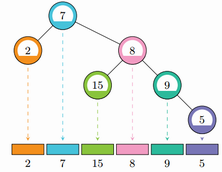

BZPRO
#5200. [NWERC2017]Factor-Free Tree
内存限制：512 MiB
时间限制：40 Sec
提交
提交记录
讨论
题目描述
一棵Factor-Free Tree是指一棵有根二叉树，每个点包含一个正整数权值，且每个点的权值都与其所有祖先的权值互质。
二叉树中序遍历是指按照左子树-根-右子树的顺序递归遍历二叉树，将每个点的权值依次写下来得到的序列。
给定一个序列a_1,a_2,...,a_n，请判断它是不是可能是某棵Factor-Free Tree的中序遍历序列，如果是的话请给出例子。

输入格式
第一行包含一个正整数n(1<=n<=1000000)。
第二行包含n个正整数a_1,a_2,...,a_n(1<=a_i<=10^7)，表示节点编号为1到n的每个点的权值。
输出格式
若不是，输出impossible
否则输出一行n个整数，依次表示序列每一项代表的节点在树中的父亲节点，若是根节点则输出0。
若有多组解，输出任意一组。
样例
样例输入
6
2 7 15 8 9 5
样例输出
2 0 4 2 4 5
数据范围与提示